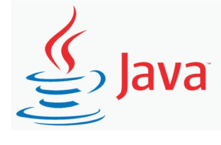

What is a Programming Language?
A programming language is a computer language that is used by programmers (developers) to communicate with computers. It is a set of instructions written in any specific language ( C, C++, Java, Python) to perform a specific task.A programming language is mainly used to develop desktop applications, websites, and mobile applications.
Watch the video to easily understand...
Types of programming language
- Low-level programming language
- Machine Language
- Assembly Language
- High-level programming language
- Procedural Oriented programming language
- Object-Oriented Programming language
- Natural language
- Middle-level programming language
Low-level language is machine-dependent (0s and 1s) programming language. The processor runs low- level programs directly without the need of a compiler or interpreter, so the programs written in low-level language can be run very fast. Low-level language is further divided into two parts -
Machine language is a type of low-level programming language. It is also called as
machine
code or
object code . Machine language is easier to read because it is normally displayed
in
binary or
hexadecimal form (base 16) form. It does not require a translator to convert the programs
because
computers directly understand the machine language.
The advantage of machine language is
that it
helps the programmer to execute the programs faster than the high-level programming language.
Assembly language (ASM) is also a type of low-level programming language that is designed for specific processors. It represents the set of instructions in a symbolic and human-understandable form . It uses an assembler to convert the assembly language to machine language.The advantage of assembly language is that it requires less memory and less execution time to execute a program
High-level programming language (HLL) is designed for developing user-friendly software programs and websites . This programming language requires a compiler or interpreter to translate the program into machine language (execute the program). The main advantage of a high-level language is that it is easy to read, write, and maintain. High-level programming language includes Python, Java, JavaScript, PHP, C#, C++, Objective C, Cobol, Perl, Pascal, LISP, FORTRAN, and Swift programming language. A high-level language is further divided into three parts -
Procedural Oriented Programming (POP) language is derived from structured programming and based upon the procedure call concept. It divides a program into small procedures called routines or functions . Procedural Oriented programming language is used by a software programmer to create a program that can be accomplished by using a programming editor like IDE, Adobe Dreamweaver, or Microsoft Visual Studio.The advantage of POP language is that it helps programmers to easily track the program flow and code can be reused in different parts of the program.
Object-Oriented Programming (OOP) language is based upon the objects. In this programming language, programs are divided into small parts called objects. It is used to implement real-world entities like inheritance, polymorphism, abstraction, etc in the program to makes the program resusable, efficient, and easy-to-use. The main advantage of object-oriented programming is that OOP is faster and easier to execute, maintain, modify, as well as debug.
Natural language is a part of human languages such as English, Russian, German, and Japanese. It is used by machines to understand, manipulate, and interpret human's language. It is used by developers to perform tasks such as translation, automatic summarization, Named Entity Recognition (NER), relationship extraction, and topic segmentation. The main advantage of natural language is that it helps users to ask questions in any subject and directly respond within seconds.
Middle-level programming language lies between the low-level programming language and
high-level
programming language . It is also known as the intermediate programming language and
pseudo-language.
A middle-level programming language's advantages are that it supports the features of high-level
programming, it is a user-friendly language, and closely related to machine language and human
language.
Example: C, C++, language
What is a Scripting Language?
A script or scripting language is a computer language that does not need the compilation step and is rather interpreted one by one at runtime. It is where the script is written and where instructions for a run-time environment are written. In contrast to programming languages that are compiled first before running, scripting languages do not compile the file and execute the file without being compiled.Scripts are often utilized to create dynamic web applications nowadays because they are linked to web development. Server-Side Scripting Languages and Client-Side Scripting Languages are the two types of scripting languages. Python, PHP, and Perl are examples of server-side scripting languages, while JavaScript is the greatest example of a client-side scripting language. These languages are often developed with the goal of communicating with other programming languages.
There are multiple scripting languages available some are as follows:
- bash: It is a scripting language that's the default command interpreter on most GNU/Linux systems and can be found on a variety of operating systems. As compared to other programming languages, the use of bash is much easier to create scriptsIt stores documentation for others to use, defines the tools to use and command line code, and provides useful reusable scripts. Its name is short for 'Bourne-Again SHell'.
- Ruby: It is a scripting and pure object-oriented programming language that enables developers to create innovative software. It was established in 1993 by Yukihiro Matsumoto of Japan and is excellent for web development. Ruby offers the same features that are included in the languages such as Python, Perl, and Smalltalk.
- Node js: Writing network applications in JavaScript is open-source and cross-platform. It is not a programming language that reads and writes files on a computer/server and handles networking, but it does employ JavaScript as the core programming interface. For real-time web applications, corporate users of Node.js include Yahoo, Netflix, PayPal, IBM, Microsoft, and LinkedIn.
- Python: It is an object-oriented programming language that is the most widely used language among developers, in modern times. It is simple and interpreted. It's a dynamically semantic language with enormous scripted lines of code. It has high-level data structures built in, making it easy to use and suitable for Rapid Application Development. It supports code reuse and software modularity by allowing modules and packages.
- Perl: It is a scripting as well as dynamic programming language with innovative features. These features make it popular and different from other languages. It is available on all Linux and Windows servers, which was developed by Larry Wall in 1987. Although it has no official Full form, the most used expended form is "Practical Extraction and Reporting Language. High-traffic websites widely use Perl, including IMDB, priceline.com, and it also helps in text manipulation tasks.
Most commonly used Programming Language
As we all know, the programming language makes our life simpler. Currently, all sectors (like education, hospitals, banks, automobiles, and more ) completely depend upon the programming language. There are dozens of programming languages used by the industries. Some most widely used programming languages are given below -
- Python
- Advantages
- Python is easy to read, easy to understand, and easy to write.
- It integrates with other programming languages like C, C++, and Java.
- Python executes code line-by-line, so it is easy for the programmer to find the error that occurred in the code.
- Python is platform-independent means you can write code once and run it anywhere.
- Disadvantages
- Python is not suitable for developing mobile applications and games.
- Python works with the interpreter. That's why it is slower than other programming languages like C and C++.
- Java 
- Advantages
- Java is easy to write, compile, learn, and debug as compared to other programming languages.
- It provides an ability to run the same program on different platforms.
- It is a highly secured programming language because in java, there is no concept of explicit pointers.
- It is capable of performing multiple tasks at the same time.
- Disadvantages
- Java consumes more memory and slower than other programming languages like C or C++.
- It does not provide a backup facility..
- C
- Advantages
- C language is easy to learn.
- It is fast, efficient, portable, easy to extend, powerful, and flexible programming language.
- It is used to perform complex calculations and operations such as MATLAB.
- It provides dynamic memory allocation to allocate memory at the run time.
- Disadvantages
- In the C programming language, it is very difficult to find the errors.
- C does not support the concepts of constructors, destructors, abstraction, polymorphism, encapsulation, and namespace like OOPs.
- C++
- Advantages
- C++ is a simple and portable structured programming language.
- It supports OOPs features such as Abstraction, Inheritance, Encapsulation.
- It provides high-level abstraction and useful for a low-level programming language, and more efficient for general-purpose.
- C++ is more compatible with the C language.
- Disadvantages
- C++ programming language is not secured as compared to other programming languages like Java or Python.
- C++ can not support garbage collection.

Python is one of the most widely used user-friendly programming languages. It is an open-source and easy to learn programming language developed in the 1990s. It is mostly used in Machine learning , Artificial intelligence , Big Data, GUI based desktop applications, and Robotics.
Java is a simple, secure, platform-independent, reliable, architecture-neutral high-level programming language developed by Sun Microsystems in 1995. Now, Java is owned by Oracle. It is mainly used to develop bank, retail, information technology, android, big data, research community, web, and desktop applications.
C is a popular, simple, and flexible general-purpose computer programming language. Dennis M Ritchie develops it in 1972 at AT&T. It is a combination of both low-level programming language as well as a high-level programming language. It is used to design applications like Text Editors, Compilers, Network devices, and many more.

C++ is one of the thousands of programming languages that we use to develop software. C++ programming language is developed by Bjarne Stroustrup in 1980. It is similar to the C programming language but also includes some additional features such as exception handling, object-oriented programming, type checking, etc.